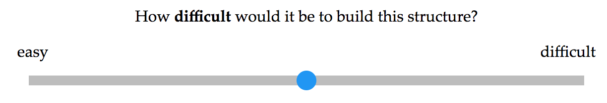

Welcome to the experiment! You must use Google Chrome as your browser for this game. In this game, you will view a series of block structures. For each structure, you will see a "START" picture and a "FINISH" picture. Your task is to judge how difficult it would be to build each structure from start to finish .
Click the button below when you are ready to begin.
** This HIT is part of a scientific research project conducted by the Social Learning Lab at Stanford and has been approved by the IRB of Stanford University. Your decision to complete this HIT is voluntary. We will only have access to your worker ID and no other information to identify you. The only other information we will have, in addition to your response, is the time at which you completed the survey and the amount of time you spent to complete it. The results of the research may be presented at scientific meetings or published in scientific journals. Clicking on the 'START' button above indicates that you are at least 18 years of age, and agree to complete this HIT voluntarily.
If you have any questions, concerns, or complaints about this research study, its procedures, risks, and benefits, contact the lab manager, Grace Bennett-Pierre, sll-inquiries-mturk@lists.stanford.edu, or call (650) 498-7832.
If you are not satisfied with how this study is being conducted, or if you have any concerns, complaints, or general questions about the research or your rights as a participant, please contact the Stanford Institutional Review Board (IRB) to speak to someone independent of the research team at (650)-723-2480 or toll free at 1-866-680-2906. You can also write to the Stanford IRB, Stanford University, 3000 El Camino Real, Five Palo Alto Square, 4th Floor, Palo Alto, CA 94306.
Protocol approval date: 12/3/14
Protocol expiration date: 08/28/17
Somtimes at START, the structure will be partially made already. Please look carefully at both photos!
You will use a sliding scale from 0 (easy) to 100 (difficult) to mark your answer. You can drag the circle to respond.
Here's an example of what you will see:

This is an example of an easy structure to build.
This is an example of a difficult structure to build.
Finally, we have a few demographic questions for you.
You're finished - thanks for participating! Submitting to Mechanical Turk...